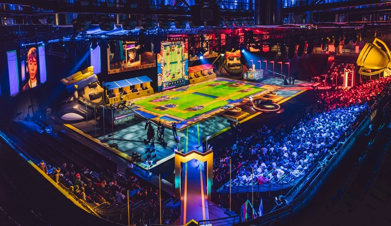
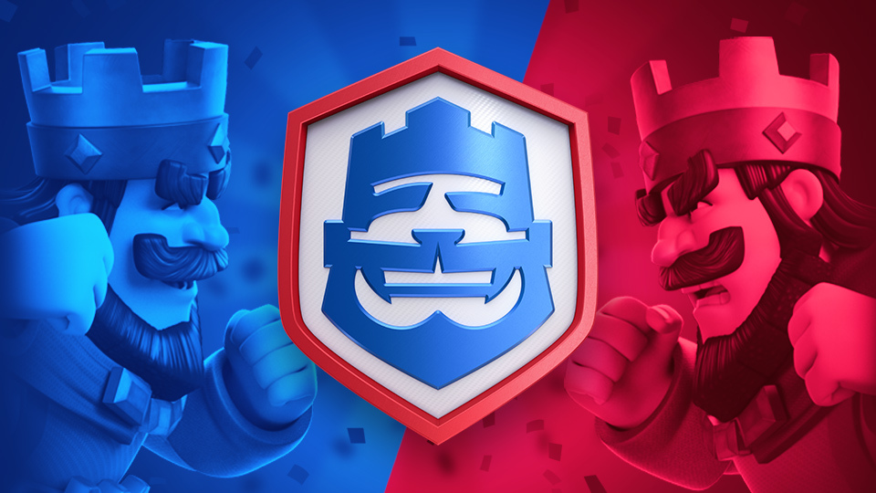

E-Sports
Zoals meerdere games kan je Clash Royale ook competitief spelen. Dit wordt ook wel de E-Sports van Clash Royale genoemd. Maar wat zijn E-Sports nou eigenlijk? E-Sports is het competitief (serieuzer) spelen van een video game, in de hoop dat je hier geld mee verdient. Bij de game Clash Royale kan je dit dus ook doen. In Clash Royale noemen ze het ‘’Clash Royale League’’ Oftewel CRL. Ieder jaar wordt dit gehouden met verschillende toernooien en verschillende geld prijzen, Soms tot wil 1 Miljoen Dollar! Dit soort toernooien worden door het hele jaar doorgehouden. Maar hoe doe je hier nou aan mee? Je kan je kwalificeren om hier aan mee te doen door verschillende challanges in game te voltooiden. Deze challanges komen een paar keer per jaar. Als je dit is gelukt ga je door naar de volgende rondes. Waar je weer tegen betere spelers komt en zo door. Steeds kom je een stukje hoger en uiteindelijk heb jij jezelf gekwalificeerd voor CRL. Dit is natuurlijk wel erg moeilijk want je komt tegen de beste van de beste spelers. Daarom lukt het ook niet veel mensen om zo hoog te komen. CRL bestaat al sinds 2017 en is verloopig nog van plan om meerdere jaren door te gaan. (De linkerafbeelding is een afbeelding van hoe de CRL eruit ziet, en de recehterfoto is het logo van de CRL)
 